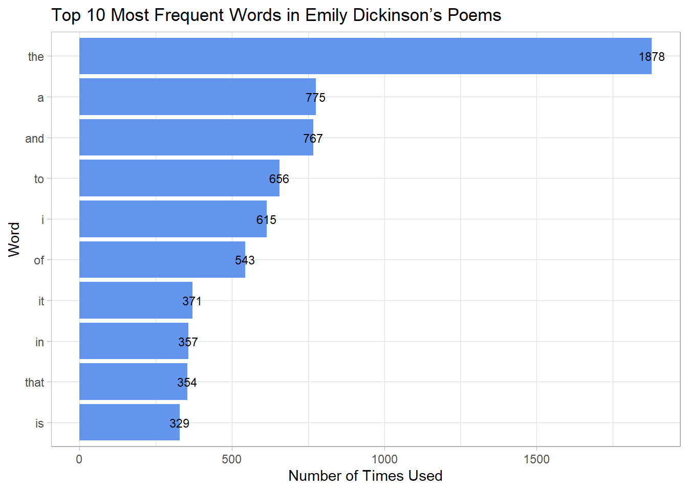
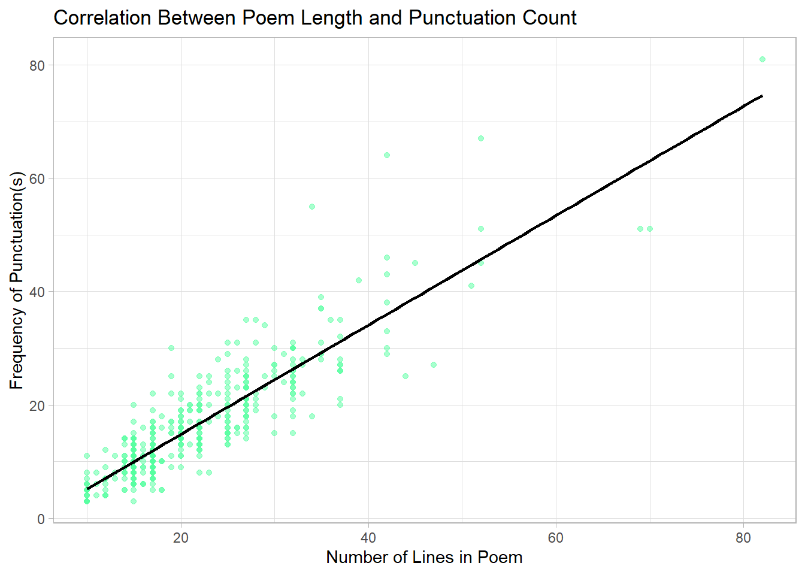

Analysis of Emily Dickinson Poems from Project Gutenberg
Author
Phu Vo
Published
October 8, 2025
Introduction
For this week’s project, I decided to do a full-text analysis from a collection of all of Emily Dickinson’s poems, transcribed by Jim Tinsley and made freely available on the Gutenberg project. In my analysis, I use 6 str_*() functions, those being str_count(), str_detect(), str_to_lower(), str_split(), str_extract(), and str_extract_all(). The lookaround I use is a lookbehind. I use 4 regular expressions – 1) to detect whether or not a poem contains death related words, 2) to extract any “year-like” number (4-digits), 3) during the lookbehind, and 4) to count the number of punctuation Dickinson uses. My two plots include one that graphs the top 10 most frequent words in Dickinson poems, and the second being an analysis of poem length to punctuation count– which, we should see, that the longer the poem length, the more punctuation it features.
Data Source
The data of the Emily Dickinson Poems come from the Amherst-Statistics/DickinsonPoems GitHub repository, created by Nicholas Horton (reachable at nicholasjhorton@gmail.com), which includes transcriptions of Dickinson’s poems in the DickinsonPoems package. The link to the GitHub repo can be accessed via the following: Github.The dataset comes from Project Gutenberg, which is an e-Library of over 75,000 eBooks. The author of the poems, is, well, Emily Dickinson, and the transcriptions were produced by Jim Tinsley, who can be contacted at jtinsley@pobox.com. These poems can be accesed here: Gutenberg.
The above tibble is a sliced set of the poems dataframe, showing the first 10 poems after the text processing. Each row represents a single poem, identified by its poem ID. For the columns, poem_id is the unique identifier for each poem, n_lines the total number of lines in that poem, punctuation_count is the total number of punctuation marks in the poem (Dickinson used many punctuations in writing, especially dashes– I didn’t know how to specify the em-dash in r so I just did all punctuation), mentions_death is a Boolean that returns whether or not the poem contains death-related words (which I interpreted in death_regexp), years_found is a list containing any four-digit year-like patterns in the poem, and after_word_my_rgexp is the first word that follows “poem” in each poem, if present (using look behind, as Dickinson’s poems were often personal and invoked a lot of first-person pronouns).
Plot 1 – Most Frequent Words
most_used_words <- tokenize_filtered |>count(words, sort =TRUE) |>slice_head(n =10)most_used_words |>ggplot(aes(x =reorder(words, n), y = n)) +geom_col(fill ="cornflowerblue") +geom_text(aes(label = n),size =3) +coord_flip() +labs(title ="Top 10 Most Frequent Words in Emily Dickinson’s Poems",x ="Word",y ="Number of Times Used" ) +theme_light()

The above bar chart displays the top 10 most frequent meaningful words in Emily Dickinson’s poems after removing common stop words and filtering out fragmented tokens produced by contractions. A lot of common structural and grammatical words were filtered out because I wanted to focus on words that carry semantic weight to reveal the core ideas shaping Dickinson’s poetry. The most frequent word is “little,” with 91 uses, which may reflect Dickinson’s fascination with measuring life in small units, from tiny distances, brief encounters, to implied emotions. Her attention to miniature detail often elevates the ordinary into the spiritual or metaphysical. In this way, little becomes an aesthetic strategy as much as a descriptor. Words such as “day,” “life,” and “till” reflect her preoccupation with boundaries and transitions– the movement between life and death, morning and night, presence and absence. The repeated appearance of “will” and “till” suggests an emotional grammar built around uncertainty, anticipation, and incompletion, which is further backed by the word “away,” which shows seperation and space.
Poem Length vs. Punctuation Count
ggplot(poems, aes(x = n_lines, y = punctuation_count)) +geom_point(alpha =0.5, color ="seagreen1") +geom_smooth(method ="lm", se =FALSE, color ="black") +labs(title ="Correlation Between Poem Length and Punctuation Count",x ="Number of Lines in Poem",y ="Frequency of Punctuation(s)" ) +theme_light()
`geom_smooth()` using formula = 'y ~ x'

The above plot is scatter plot that displays the correlation between poem length and punctuation count. In theory, the more lines in a poem, the greater the frequency of punctuation. I decided to use a linear model (method = “lm”) as I believed that the number of lines in a poem should function as a direct explanation for the punctuation count in Dickinson’s poems. While the regression line shows a general upward trend, the data points reveal considerable variation, especially as poem length increases. Most frequently, the longer the poem, Dickinson will use more punctuation than the model predicts she would use. The variation could reflect her unconventional approach to grammar and poetic rhythm, which serve stylistically to contribute to the poem’s tone and emotion. Punctuation in a Dickinson work is not merely just a structural device, but a deliberate choice that reflects the aesthetic and elasticity of her poetry.
Narrative
In completing this project, I wanted to have a better understanding of Emily Dickinson’s poetic style through a computational lens. While her writing is intensely emotional and personal, known for its introspection and peculiar use of punctuation, it also displays a structural consistency with recurring themes. I wondered if these qualities could be reflected quantitatively through text analysis. By counting word frequency, I was able to explore Dickinson’s vocabulary– not merely through the most common grammatical words in English, but through a filtered set of meaningful poetic terms. Rather than being driven by elaborate word choice and diction, Dickinson repeatedly relies on small, expressive words such as little, day, will, and till, which reveal her focus on fine detail, fleeting experiences, and the suspension of action. Her most common words do not name large abstractions, but rather they gesture toward partial states and smallness, inviting interpretation through what is tentative, approximate, or unfinished. This pattern reinforces the sense that Dickinson’s poetic power lies not in elaborate language, but in her choices that make everyday words carry deeper philosophical imagery and weight.
The regular expressions I designed further support my question. I tried to detect text from poems which reference words related to death, one of Dickinson’s most enduring themes, and extracted any year-like numbers that might situate her work temporally or support the theme of death and ending. By identifying words that followed “my”, I tried to trace personal/possessive language– all these textual patterns tell the story of how Emily Dickinson engaged with mortality, memory, limit, and subjectivity in her work.